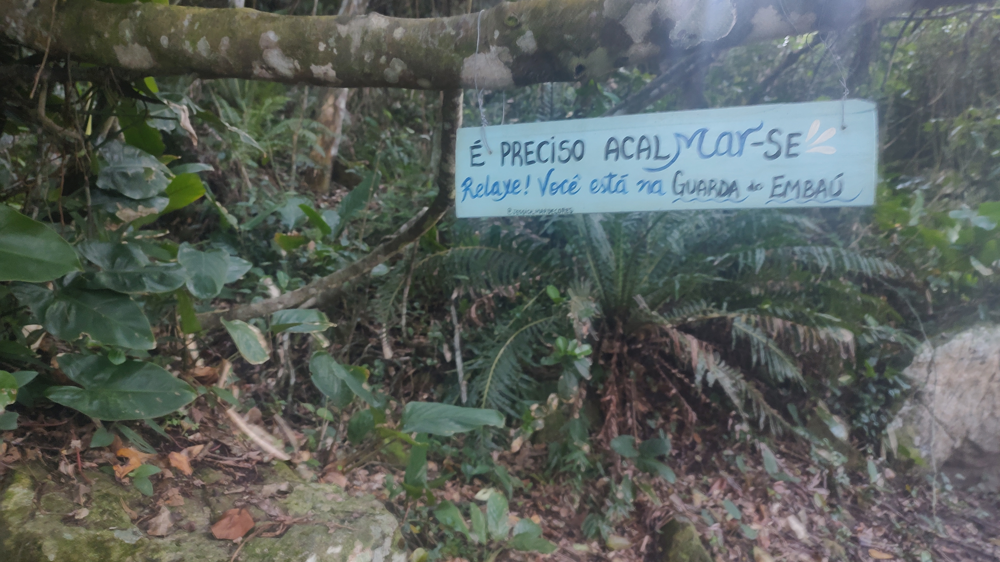

Aero neuro balance
Es una práctica holística que combina los principios de la neurociencia de la relación mente-cuerpo, técnicas de meditación, posturas inspiradas en asanas de yoga complementadas con el uso del columpio, respiración consciente y ejercicios enfocados en los bloqueos energéticos. Está diseñada para cultivar el equilibrio entre el bienestar físico y mental, optimizando la conexión entre el cerebro, el sistema nervioso periférico y el cuerpo. Aborda eficazmente los desafíos asociados al estilo de vida occidental contemporáneo, caracterizado por altos niveles de estrés, sedentarismo y sobrecarga mental, provenientes de la multitarea y la estimulación visual y auditiva permanente. Se dirige a potenciar los efectos positivos de la re-integración cuerpo mente, sosteniendo que la distinción es útil a los fines metodológica, pero ficticia, porque consideramos a las personas como entidades integradas.
La combinación de técnicas de meditación y respiración activa incide sobre el sistema nervioso parasimpático, promoviendo una respuesta de relajación que contrarresta los efectos del estrés crónico. Esta activación facilita la disminución de la frecuencia cardíaca y la presión arterial, e induce un estado de calma mental y emocional.
Las posturas de yoga realizadas en combinación con el columpio fortalece la musculatura, mejora la flexibilidad y aumenta la estabilidad corporal. Estos ejercicios requieren la activación de múltiples grupos musculares, lo que da lugar a tonificación generalizada, mejora en la coordinación y desarrollo de una postura más equilibrada.
La práctica con soportes inestables, como el columpio, pone en juego la capacidad de percibir la posición y el movimiento del cuerpo en el espacio. Esto se traduce en una mejor coordinación motora y en una mayor conciencia corporal, aspectos fundamentales para prevenir lesiones y mejorar el rendimiento en actividades diarias o deportivas. Estas demandas de equilibrio y estabilidad requieren un alto grado de concentración y enfoque mental, un estado de atención plena que fortalece las conexiones neuronales asociadas con la atención sostenida y la claridad mental, contrarrestando la dispersión cognitiva común en el estilo de vida occidental.
Al armonizar cuerpo y mente, se facilita un estado de equilibrio integral que mejora la calidad de vida. La práctica regular contribuye a una mayor paz interior, equilibrio emocional y capacidad de responder de manera adecuada a las demandas externas, aspectos esenciales para enfrentar los desafíos de la vida moderna.
En resumen, esta práctica ofrece una respuesta efectiva a los efectos negativos del estilo de vida occidental actual, proporcionando herramientas prácticas para mejorar la salud física, mental y emocional de manera holística.
